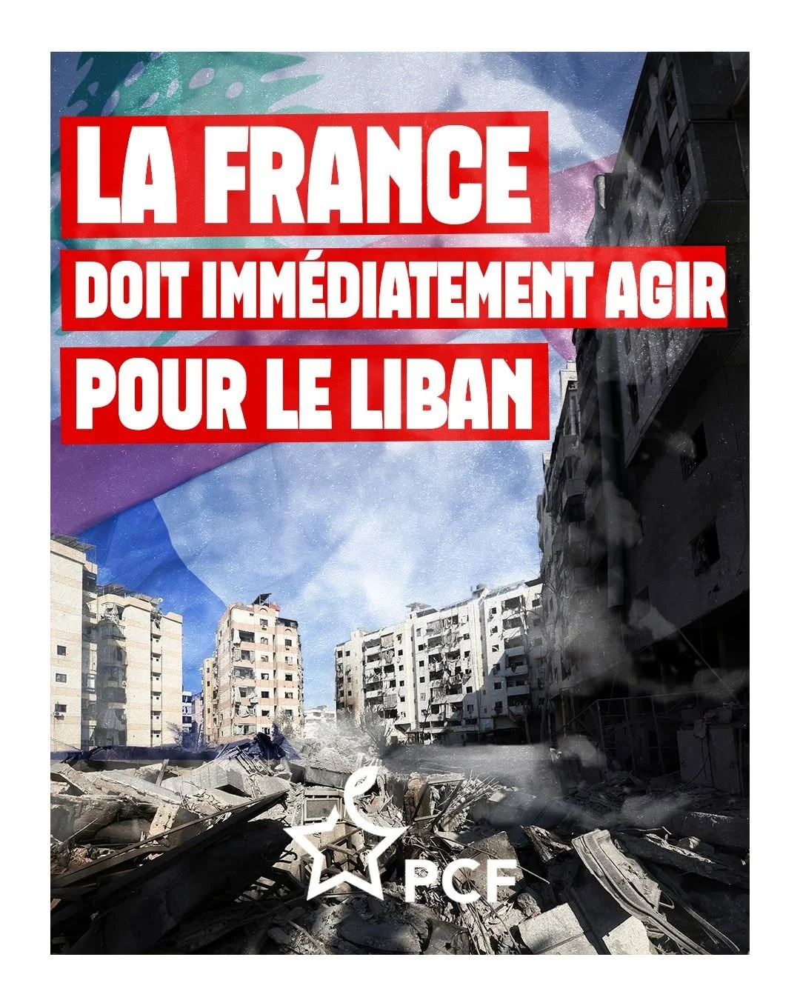

Publication relayée par le PCF 79
Le PCF appelle la France à agir pour un cessez-le-feu au Liban
Date de mise à jour indiquée par Facebook · 19 mars 2026
Texte de la publication · PCF national et PCF Monde
🇱🇧 La France doit agir pour le Liban, immédiatement.
Bombardements, invasion terrestre, civils ciblés : le gouvernement d’extrême droite israélien franchit une nouvelle étape dans la guerre.
Des centaines de morts, des centaines de milliers de déplacés. Des crimes de guerre documentés, notamment l’usage de phosphore blanc.
Rien ne justifie ces attaques contre des populations civiles.
🚩 Le PCF appelle à un cessez-le-feu immédiat, le retrait des forces israéliennes du Liban, l’application de la résolution 1701 de l’ONU, le respect de la souveraineté du Liban, le retour des réfugiés.
La France et la communauté internationale doivent agir, maintenant.

Sources
PCF national et PCF Monde · publication relayée par le PCF 79 · bibliothèque Facebook · AR-0002-FB-00836
À lire aussi · Journée internationale de la paix. Le texte national dans le relevé